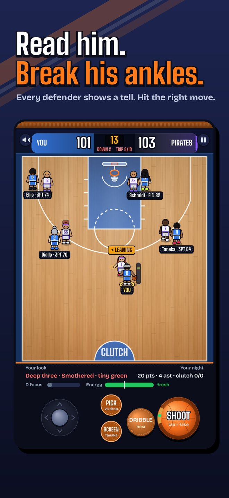
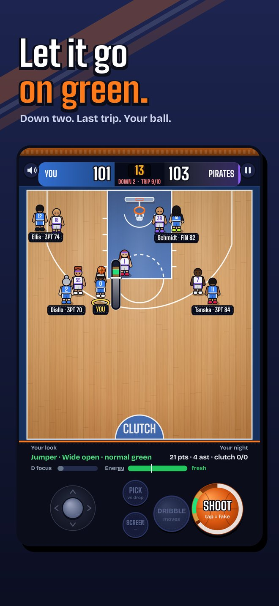
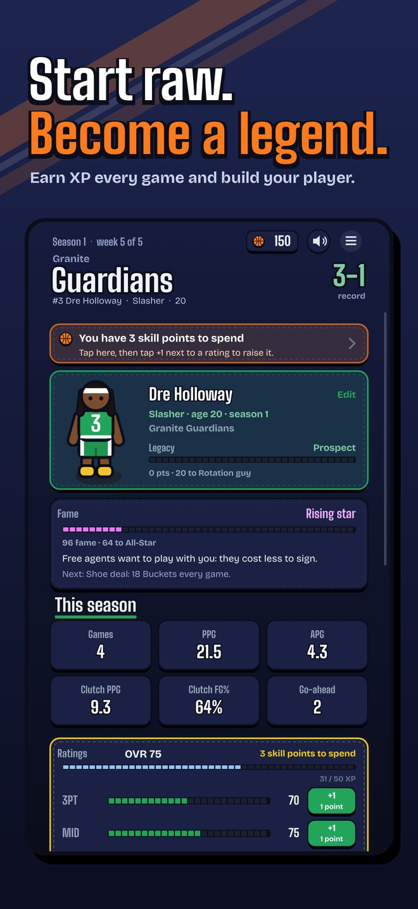
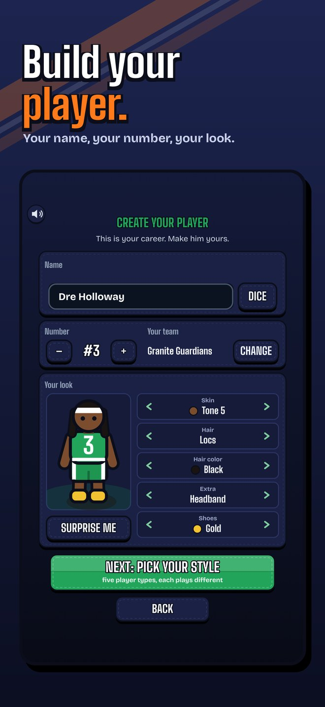
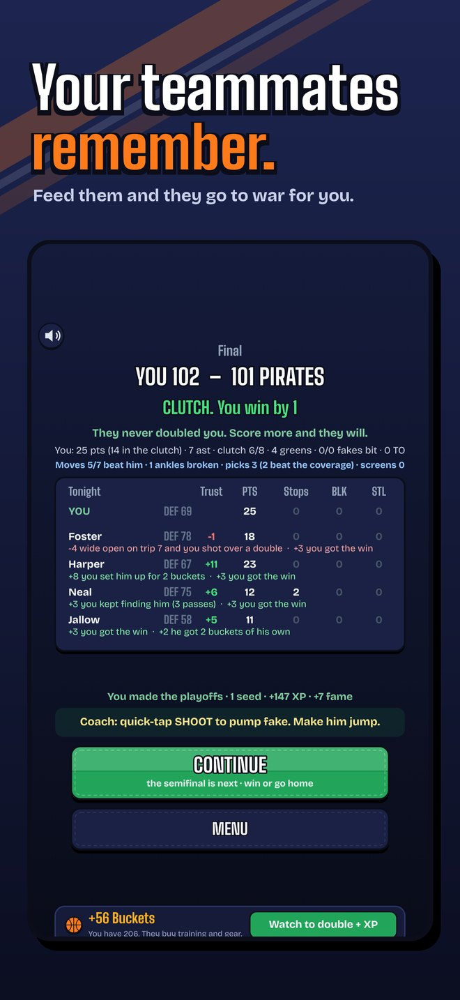
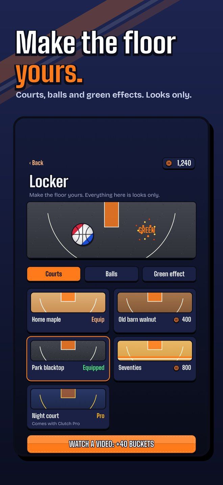

iOS · 2026 · Out Now
Clutch
A mobile basketball career game where every game starts in the last two minutes. You play the star's possessions: read your defender, beat the coverage, and take the shot that decides it. Between games you run the team.
About the Game
Clutch skips the first three and a half quarters. You inherit a score, a handful of possessions and the ball. Each trip is a small puzzle: your defender shows a tell, you answer with the move that beats it, and then you have to time the release. Get it right and he is on the floor. Guess wrong and it is a turnover.
Around those possessions sits a full career. You start as a rookie, earn XP and spend it on ratings, keep your teammates happy enough to stay, manage a salary cap from the front office, and try to get a four-team playoff bracket to go your way. Energy carries between games, so how hard you run tonight changes how you start the next one.
Gameplay
- He leans, so you cross him over.
- He crowds you, so you step back.
- He sags off, so you shoot.
- Or call for a screen and find the roller.
Screenshots






Key Features
How It Was Built
I designed and directed Clutch solo: the rules, the systems, the economy and every round of playtest feedback. The code was written through AI-assisted development with Claude, in a single HTML5 canvas file that is wrapped for iOS with Capacitor. All audio is synthesized at runtime, so the game ships with no sound files.
Balance was tuned with bot simulations as well as hands-on play. Scripted bots with different play styles ran hundreds of games and full ten-season careers after each rules change, which is how win rates, energy costs, progression pace and the in-game economy were checked before each build.